전기공사기사 (2012-05-20 기출문제)
1과목: 전기응용 및 공사재료
1. 가로 5[m], 세로 6[m], 광원에서 작업면까지의 높이 2[m], 바닥에서 작업면까지의 높이 0.8[m]인 방의 천정에 2등용 형광등 기구를 설치하여 500[lx]의 평균 조도를 얻고자 한다. 이 때 실지수 k와 최소 형광등 기구의 수 N은? (단, 형광등 1개의 광속은 3000[lm], 조명률 0.6, 보수율 0.7이다.)
- k = 1.6, N = 12
- k = 1.6, N = 8
- k = 1.4, N = 8
- k = 1.4, N = 6
(정답률: 71%)

2. 조도를 구하는 식은? (단, 면적은 A, 광속은 F이다.)
- 2F×A
- F×A
- A/F
- F/A
(정답률: 89%)
3. 복사(방사) 고온계에서 온도를 측정하는 요소로 사용되는 것은?
- 저항계
- 전압계
- 전류계
- 전력계
(정답률: 57%)
4. 직류 전동기 속도제어에서 일그너 방식이 채용되는 것은?
- 제지용 전동기
- 특수한 공작 기계용
- 제철용 대형 압연기용
- 인쇄기
(정답률: 75%)
5. 핀치 오프(pinch off) 전압을 설명한 것 중 옳은 것은?
- 게이트와 드레인 사이의 전압
- 드레인과 소스 사이의 전압
- 게이트와 소스 사이의 전압
- 드레인과 드레인 사이의 전압
(정답률: 66%)
6. 열차의 능률적인 운전제어를 목적으로 하고 구간내 각역에 있는 전철기와 신호기 등을 중앙제어실에서 원격제어하는 장치는?
- 자동 열차 정지 장치
- 열차 집중 제어 장치
- 자동 열차 제어 장치
- 자동 열차 운전 장치
(정답률: 66%)
7. 금속의 표면 담금질에 적합한 가열 방식은?
- 직접 아크 가열
- 고주파 유도 가열
- 고주파 유전 가열
- 간접 저항 가열
(정답률: 74%)
8. 전극에 저항물질이 생성되었을 때 이것을 극복해서 반응이 일어나기 위해 필요한 과전압을 무엇이라 하는가?
- 농도 과전압
- 천이 과전압
- 저항 과전압
- 결정화 과전압
(정답률: 83%)
9. 전기 집진기는 무엇을 이용한 것인가?
- 와전류
- 누설전류
- 잔류자기
- 대전체간의 정전기력
(정답률: 81%)
10. 10[℃]의 물 10[ℓ]를 20분간 가열하여 96[℃]로 올리기 위해 필요한 전열기 용량은 약 몇 [kW]인가? (단, 전열기의 효율은 80%이다.)
- 2.75
- 3.75
- 5.75
- 6.75
(정답률: 78%)
11. 영상변류기(ZCT)의 1차 전류와 2차 전류는 각각 얼마를 기준으로 하는가?
- 100[mA], 1.25[mA]
- 200[mA], 1.25[mA]
- 100[mA], 1.5[mA]
- 200[mA], 1.5[mA]
(정답률: 57%)
12. 접지극으로 사용하는 동봉, 철관, 철봉, 탄소피복 강봉 길이는 얼마 이상으로 되어야 가장 적당한가? (문제 오류로 실제 시험에서는 모두 정답처리 되었습니다. 여기서는 가번을 누르면 정답 처리 됩니다.)
- 3[m]
- 6[m]
- 8[m]
- 9[m]
(정답률: 68%)
13. 차단기 약호 MBB는 다음 중 어느 것인가?
- 공기 차단기
- 자기 차단기
- 유입 차단기
- 기중 차단기
(정답률: 87%)
14. 금속관 공사용 재료가 아닌 것은?
- Coupling
- Saddle
- Bushing
- Cleat
(정답률: 76%)
15. 저압 전선로의 인입선의 중성선 또는 접지측 전선은 어느 빛깔의 애자를 사용하는가?
- 흑색
- 황상
- 청색
- 백색
(정답률: 81%)
16. 특고압 지중전선로에 사용되는 케이블이 아닌 것은?
- 미네럴 인슈레이션 케이블
- 알루미늄피 케이블
- 폴리에틸렌 혼합물 케이블
- 파이프형 압력 케이블
(정답률: 71%)
17. 굴곡 반지름이 3[m]이하 곡선부분에서 절연 트롤리선의 지지점간의 거리[m]는?
- 1
- 1.2
- 2
- 3
(정답률: 65%)
18. 전기기기 자심재료의 구비조건으로 옳지 않은 것은?
- 보자력 및 잔류자기가 클 것
- 투자율이 클 것
- 포화 자속밀도가 클 것
- 고유저항이 클 것
(정답률: 78%)
19. 지지물(전주 등)의 강도 보강 및 불평형 하중에 대한 평형 유지를 목적으로 설치하는 것은?
- 소켓아이
- 지선
- 볼아이
- 볼쇄클
(정답률: 80%)
20. 투광기와 수광기로 구성되고 물체가 광로를 차단하면 접점이 개폐되는 스위치는?
- 압력 스위치
- 리밋 스위치
- 광전 스위치
- 근접 스위치
(정답률: 86%)
2과목: 전력공학
21. 용량 30MVA, 33/11KV, △-Y결선 변압기에 차동 보호계전기가 설치되어 있다. 이 변압기로 30MVA 부하에 전력을 공급할 때 부하에 설치된 ㉠ CT의 결선방법과 ㉡ CT전류로 가장 적합한 것은?
- ㉠ Y결선, ㉡ 3.9A
- ㉠ Y결선, ㉡ 6.8A
- ㉠ △결선, ㉡ 3.9A
- ㉠ △결선, ㉡ 6.8A
(정답률: 16%)
22. 그림과 같은 전력 계통에서 A저에 설치된 차단기의 단락용량 [MVA]은? (단, 각 기기의 % 리액턴스는 발전기 G1, G2는 정격용량 15MVA 기준 각각 15%이고, 변압기는 정격용량 20MVA 기준 8%, 송전선은 정격용량 10MVA기준 11%이며, 기타 다른 정수는 무시한다.)
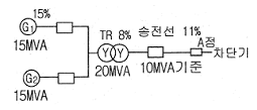
- 5
- 50
- 500
- 5000
(정답률: 19%)
23. 송전선로에서 이상전압이 가장 크게 발생하기 쉬운 경우는?
- 무부하 송전선로를 폐로하는 경우
- 무부하 송전선로를 개로하는 경우
- 부하 송전선로를 폐로하는 경우
- 부하 송전선로를 개로하는 경우
(정답률: 23%)
24. 3000kW, 역률80%(늦음)의 부하에 전력을 공급하고 있는 변전소의 역률을 90%로 향상시키는데 필요한 전력용 콘덴서의 용량 [kVA]은?
- 약 600
- 약 700
- 약 800
- 약 900
(정답률: 21%)
25. 각 수용가의 수용률 및 수용가 사이의 부등률이 변화할 때 수용가군 총합의 부하율에 대한 설명으로 옳은 것은?
- 수용률에 비례하고 부등률에 반비례한다.
- 부등률에 비례하고 수용률에 반비례한다.
- 부등률과 수용률에 모두 비례한다.
- 부등률과 수용률에 모두 반비례한다.
(정답률: 18%)
26. 원자로에 사용되는 감속재가 구비하여야 할 조건으로 틀린것은?
- 중성자 에너지를 빨리 감속시킬 수 있을 것
- 불필요한 중성자 흡수가 적을 것
- 원자의 질량이 클 것
- 감속능 및 감속비가 클 것
(정답률: 24%)
27. 장거리 송전선로는 일반적으로 어떤 회로로 취급하여 회로를 해석하는가?
- 분산 부하 회로
- 집중 정수 회로
- 분포 정수 회로
- 특성 임피던스 회로
(정답률: 22%)
28. 송전선로의 고장전류의 계산에 영상 임피던스가 필요한 경우는?
- 3상 단락
- 3선 단선
- 1선 지락
- 선간 단락
(정답률: 20%)
29. 조상설비에 대한 설명으로 잘못된 것은?
- 송수전단의 전압이 일정하게 유지되도록 하는 조정 역할을 한다.
- 역률의 개선으로 송전 손실을 경감시키는 역할을 한다.
- 전력 계통 안정도 향상에 기여한다.
- 이상전압으로부터 선로 및 기기의 보호능력을 가진다.
(정답률: 17%)
30. 송전 용량이 증가함에 따라 송전선의 단락 및 지락전류도 증가하여 계통에 여러 가지 장해요인이 되고 있는데 이들의 경감대책으로 적합하지 않은 것은?
- 계통의 전압을 높인다.
- 발전기와 변압기의 임피던스를 작게한다.
- 송전선 또는 모선간에 한류 리액터를 삽입한다.
- 고장 시 모선 분리 방식을 채용한다.
(정답률: 17%)
31. 비접지 방식에 대한 설명 중 옳은 것은?
- 보호 계전기의 동작이 가장 확실하다.
- 고전압 송전방식으로 주로 채택하고 있다.
- 장거리 송전에 적합하다.
- V-V 결선이 가능하다.
(정답률: 18%)
32. 1선의 저항이 10Ω, 리액턴스가 15Ω인 3상 송전선이 있다. 수전단 전압 60kV, 부하역률 0.8(lag), 부하전류 100A라고 할 때, 송전단 전압 [kV]은?
- 61
- 63
- 81
- 83
(정답률: 19%)
33. 6.6kV 고압 배전선로(비접지 선로)에서 지락보호를 위하여 특별히 필요치 않은 것은?
- 과전류 계전기(OCR)
- 선택접지 계전기(SGR)
- 영상 변류기(ZCT)
- 접지 변압기(GPT)
(정답률: 13%)
34. 6.6kV, 60Hz, 3상 3선식 비접지식에서 선로의 길이가 10km이고, 1선의 대지정전용량이 0.0⑤[㎌/㎞]일때 1선 지락시의 고장전류 Ig[A]의 범위로 옳은것은?
- Ig＜ 1
- 1＜ Ig ＜ 2
- 2＜ Ig ＜ 3
- 3＜ Ig ＜ 4
(정답률: 16%)
35. 고압고온을 채용한 기력발전소에서 채용되는 열 사이클로 그림과 같은 장치 선도의 열사이클은?
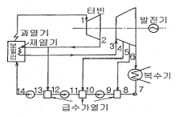
- 랭킨 사이클
- 재생 사이클
- 재열 사이클
- 재열재생 사이클
(정답률: 21%)
36. 유역 면적이 4000㎢인 어떤 발전 지점이 있다. 유역 내의 연 강우량이 1400㎜이고, 유출계수가 75%라고 하면 그 지점을 통과하는 연평균 유량[m3/sec]은?
- 약 121
- 약 133
- 약 251
- 약 150
(정답률: 14%)
37. 기저 부하용으로 사용하기 적합한 발전방식은?
- 석탄 화력
- 저수지식 수력
- 양수식 수력
- 원자력
(정답률: 17%)
38. 전력원선도에서 구할 수 없는 것은?
- 송수전 할 수 있는 최대 전력
- 필요한 전력을 보내기 위한 송수전 전압간의 상차각
- 선로 손실과 송전 효율
- 과도극한 전력
(정답률: 20%)
39. △결선의 3상 3선식 배전선로가 있다. 1선이 지락 하는 경우 건전상의 전위 상승은 지락 전의 몇 배가 되는가?
- √3
- 3
- 3√2
- 3/2
(정답률: 21%)
40. 직렬 콘덴서를 선로에 삽입할 때의 이점이 아닌것은?
- 선로의 인덕턴스를 보상한다.
- 수전단의 전압 변동률을 줄인다.
- 정태 안정도를 증가한다.
- 수전단의 역률을 개선한다.
(정답률: 17%)
3과목: 전기기기
41. 다음 ( )안에 알맞은 내용은?
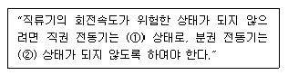
- ① 무부하, ② 무여자
- ① 무여자, ② 무부하
- ① 무여자, ② 경부하
- ① 무부하, ② 경부하
(정답률: 20%)
42. 전기자 반작용에 대한 설명으로 틀린 것은?
- 전기자 중성축이 이동하여 주자속이 증가하고 정류자편 사이의 전압이 상승한다.
- 전기자 권선에 전류가 흘러서 생긴 기자력은 계자 기자력에 영향을 주어서 자속의 분포가 기울어진다.
- 직류 발전기에 미치는 영향으로는 중성축이 이동되고 정류자 편간의 불꽃 섬락이 일어난다.
- 전기자 전류에 의한 자속이 계자 자속에 영향을 미치게 하여 자속 분포를 변화시키는 것이다.
(정답률: 19%)
43. 정격 5[kw], 100[V], 50[A], 1500[rpm]의 타여자 직류 발전기가 있다. 계자전압 50[V], 계자전류 5[A], 전기자 저항 0.2[Ω]이고 브러시에서 전압 강하는 2[V]이다. 무부하시와 정격부하시의 전압차는 몇 [V]인가?
- 12
- 10
- 8
- 6
(정답률: 13%)
44. 유도 전동기의 2차측 저항을 2배로 하면 최대 토크는 몇 배로 되는가?
- 3배
- 2배
- 변하지 않는다.
- 1/2배
(정답률: 24%)
45. 사이리스터의 래칭 전류에 관한 설명으로 옳은 것은?
- 게이트를 개방한 상태에서 사이리스터 도통 상태를 유지하기 위한 최소전류
- 게이트 전압을 인가한 후에 급히 제거한 상태에서 도통 상태가 유지되는 최소의 순 전류
- 사이리스터의 게이트를 개방한 상태에서 전압이 상승하면 급히 증가하게 되는 순 전류
- 사이리스터가 턴온하기 시작하는 전류
(정답률: 18%)
46. 변압기의 성층철심 강판 재료의 규소 함유량은 대략 몇 [%]인가?
- 8
- 6
- 4
- 2
(정답률: 17%)
47. 1차 전압 3300[V], 권수비가 30인 단상 변압기로 전등 부하에 20[A]를 공급할 때의 입력 [kW]은?
- 2.2
- 3.3
- 6.6
- 9.9
(정답률: 20%)
48. 단상 변압기에서 전부하의 2차 전압은 100[V]이고, 전압 변동률은 3[%]이다. 1차 단자전압[V]은? (단, 1차, 2차 권선비는 20:1 이다. )
- 1940
- 2060
- 2260
- 2360
(정답률: 20%)
49. 동기 전동기에서 감자작용을 할 때는 어떤 경우인가?
- 공급 전압보다 앞선 전류가 흐를 때
- 공급 전압보다 뒤진 전류가 흐를 때
- 공급 전압과 동상 전류가 흐를 때
- 공급 전압에 상관없이 전류가 흐를 때
(정답률: 21%)
50. 2방향성 3단자 사이리스터는 어느 것인가?
- SCR
- SSS
- SCS
- TRIAC
(정답률: 17%)
51. 3상 분권 정류자 전동기인 슈라게 전동기의 특성은?
- 1차 권선을 회전자에 둔 3상 권선형 유도 전동기
- 1차 권선을 고정자에 둔 3상 권선형 유도 전동기
- 1차 권선을 고정자에 둔 3상 농형 유도 전동기
- 1차 권선을 회전자에 둔 3상 농형 유도 전동기
(정답률: 14%)
52. 3상 유도 전동기가 경부하에서 운전 중 1선의 퓨즈가 잘못되어 용단되었을 때는?
- 속도가 증가하여 다른 선의 퓨즈도 용단된다.
- 속도가 늦어져서 다른 선의 퓨즈도 용단된다.
- 전류가 감소하여 운전이 얼마동안 계속된다.
- 전류가 증가하여 운전이 얼마동안 계속된다.
(정답률: 15%)
53. 유도 전동기의 2차 효율은? (단, s는 슬립이다.)
- 1/s
- s
- 1-s
- s2
(정답률: 25%)
54. 15[kW] 3상 유도전동기의 기계손이 350[W], 전부하시의 슬립이 3[%]이다. 전부하시의 2차 동손은 약 몇 [W]인가?
- 523
- 475
- 411
- 365
(정답률: 15%)
55. 60[Hz] 6극 10[kW]인 유도전동기가 슬립 5[%]로 운전할 때 2차의 동손이 500[W]이다. 이 전동기의 전부하시의 토크[kg ‧ m]는?
- 약 4.3
- 약 8.5
- 약 41.8
- 약 83.5
(정답률: 16%)
56. 동기 발전기의 병렬운전 중 여자 전류를 증가시키면 그 발전기는?
- 전압이 높아진다.
- 출력이 커진다.
- 역률이 좋아진다.
- 역률이 나빠진다.
(정답률: 19%)
57. 터빈 발전기의 냉각을 수소냉각방식으로 하는 이유가 아닌것은?
- 풍손이 공기 냉각시의 약 1/10으로 줄어든다.
- 열전도율이 좋고 가스 냉각기의 크기가 작아진다.
- 절연물의 산화 작용이 없으므로 절연열화가 작아 수명이 길다.
- 반폐형으로 하기 때문에 이물질의 침입이 없고, 소음이 감소한다.
(정답률: 18%)
58. 브러시레스 DC 서보 모터의 특징으로 틀린 것은?
- 단위 전류당 발생 토크가 크고 효율이 좋다.
- 토크 맥동이 작고, 안정된 제어가 용이하다.
- 기계적 시간 상수가 크고 응답이 느리다.
- 기계적 접점이 없고 신뢰성이 높다.
(정답률: 21%)
59. 변압기 결선방식 중 3상에서 6상으로 변환할 수 없는 것은?
- 환상 결선
- 2중 3각 결선
- 포크 결선
- 우드 브리지 결선
(정답률: 17%)
60. 다음 ( ) 안에 알맞은 내용을 순서대로 나열한 것은?
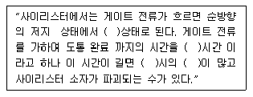
- ON, TURN ON, 스위칭, 전력손실
- ON, TURN ON, 전력손실, 스위칭
- 스위칭, ON, TURN ON, 전력손실
- TURN ON, 스위칭, ON, 전력손실
(정답률: 20%)
4과목: 회로이론 및 제어공학
61. 특성 방정식 s2+sδwns+wn2이 부족제동을 하기 위한 δ값은?
- δ = 1
- δ ＜ 1
- δ > 1
- δ = 0
(정답률: 23%)
62. 폐루프 전달함수
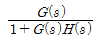
의 극의 위치를 루프 전달함수 G(s)H(s)의 이득 상수 K의 함수로 나타내는 기법은?- 근궤적법
- 주파수 응답법
- 보드 선도법
- 나이퀴스트 판정법
(정답률: 19%)
63. 다음 진리표의 논리 소자는?
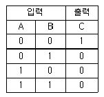
- NOR
- OR
- AND
- NAND
(정답률: 19%)
64. 그림과 같은 블록선도에 대한 등가 종합 전달함수 (C/R)는?
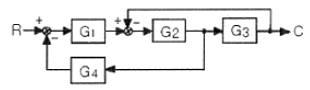
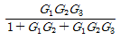
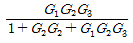
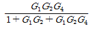
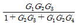
(정답률: 19%)
65.
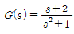
의 극점과 영점은?- -2, -2
- -j, -2
- -2, j
- ±j, -2와 ∞
(정답률: 17%)
66.
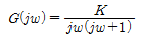
의 나이퀴스트 선도를 도시한 것은? (단, K > 0이다. )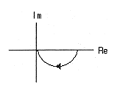
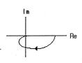
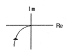
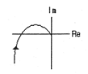
(정답률: 25%)
67. 상태 방정식
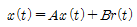
의 특성 방정식은?- |s|-B|=I
- |s|-A|= I
- |s|-B|= 0
- |s|-A|= 0
(정답률: 17%)
68. 샘플러의 주기를 T라 할 때 s 평면상의 모든 점은 식 z=esT에 의하여 z평면상에 사상된다. s평면의 좌반 평면상의 모든 점은 z평면상 단위원의 어느 부분으로 사상되는가?
- 내점
- 외점
- 원주상의 점
- z평면 전체
(정답률: 24%)
69. 물체의 위치, 각도, 자세, 방향 등을 제어량으로 하고 목표값의 임의의 변화에 추종하는 것과 같이 구성된 제어장치를 무엇이라고 하는가?
- 프로세서 제어
- 서보기구
- 자동조정
- 추종 제어
(정답률: 18%)
70. 어떤 제어계의 전달함수
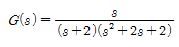
에서 안정성을 판정하면?- 안정하다.
- 불안정하다.
- 임계상태이다.
- 알 수 없다.
(정답률: 20%)
71. 그림에서 단자 ab에 나타나는 전압 Vab는 몇 [V]인가?
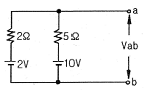
- 약 2
- 약 4.3
- 약 5.6
- 약 8
(정답률: 20%)
72. 회로에서 단자 a, b 사이에 교류전압 200[V]를 가하였을 때, c, d 사이의 전위차는 몇 [V]인가?
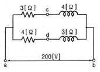
- 46
- 96
- 56
- 76
(정답률: 15%)
73. 블록선도에서 C(s)=R(s)라면 전달함수 G(s)는?
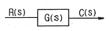
- 0
- -1
- ∞
- 1
(정답률: 18%)
74. 선로의 임피던스 Z=R+jwL[Ω], 병렬 어드미턴스가 Y=G+jwC[℧]일 때, 선로의 저항 R과 콘덕턴스 G가 동시에 0이 되었을 때 전파정수는?
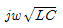
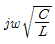
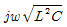
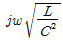
(정답률: 22%)
75. 그림과 같은 4단자망에서 정수 행렬은?
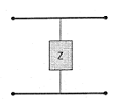
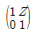
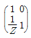
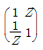
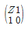
(정답률: 21%)
76. RL 직렬회로에
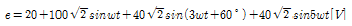
인 전압을 가할 때 제 5고조파 전류의 실효값은 몇 [A]인가? (단, R=4[Ω], wL=1[Ω]이다.)- 약 6.25
- 약 8.83
- 약 12.5
- 약 16.0
(정답률: 19%)
77.
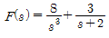
의 역 라플라스 변환은?- (3t2+3e-3t)u(t)
- (4t2+3e-2t)u(t)
- (8t2-3e2t)u(t)
- (8t2+3e-2t)u(t)
(정답률: 19%)
78. 대칭 3상 4선식 전력계통이 있다. 단상 전력계 2개로 전력을 측정하였더니 각전력계의 값이 각각 -301[W] 및 1327[W]이었다. 이때 역률은 약 얼마인가?
- 0.94
- 0.75
- 0.62
- 0.34
(정답률: 16%)
79. 다음 회로의 역회로는? (단, K2=2×103이다.)
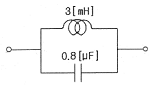
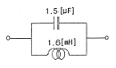
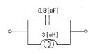
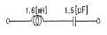
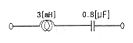
(정답률: 17%)
80. 저항 R, 인덕턴스 L, 콘덴서 C의 직렬회로에서 발생되는 과도현상이 진동이 되지 않을 조건은?
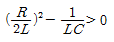
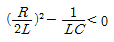
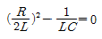
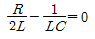
(정답률: 14%)
5과목: 전기설비기술기준 및 판단기준
81. 철탑의 강도 계산에 사용하는 이사 시 상정하중의 종류가 아닌것은?
- 수직하중
- 좌굴하중
- 수평 횡하중
- 수평 종하중
(정답률: 21%)
82. 220[V] 저압전로의 절연저항은 몇 [MΩ]이상이어야 하는가?(오류 신고가 접수된 문제입니다. 반드시 정답과 해설을 확인하시기 바랍니다.)
- 0.1
- 0.2
- 0.3
- 0.4
(정답률: 18%)
83. 애자 사용 공사에 의한 고압 옥내배선에 사용되는 연동선의 최소 지름은 몇 [mm2]인가?
- 2.5
- 4
- 6
- 8
(정답률: 11%)
84. 옥내 방전등 공사에 대한 설명으로 알맞지 않은 것은?
- 관등회로의 사용전압이 440[V] 이상인 경우에는 방전등용 변압기를 설치할 것
- 습기가 많은 곳에 시설하는 경우에는 적절한 방습장치를 할 것
- 관등회로의 사용전압이 400[V] 이상의 저압인 경우는 특별 제 3종 접지공사를 할 것
- 관등회로의 사용전압이 고압이고 관등회로의 동작전류가 10[A]를 넘는 경우는 제 1종 접지공사를 할 것
(정답률: 20%)
85. 저압 옥내간선에서 분기하여 전기사용기계기구에 이르는 저압 옥내 전로에서 저압 옥내간선과 분기점에서 전선의 길이가 몇 [m] 이하인 곳에 개폐기 및 과전류 차단기를 설치하여야 하는가?
- 3
- 4
- 5
- 6
(정답률: 21%)
86. 가공전선로의 지지물 구성체가 강관으로 구성되는 철탑으로 할 경우 갑종 풍압하중은 몇 [Pa]의 풍압을 기초로 하여 계산한 것인가? (단, 단주는 제외하며 풍압은 구성재의 수직 투영면적 1[m2]에 대한 풍압이다.)
- 588
- 1117
- 1255
- 2157
(정답률: 18%)
87. 태양전지 발전소에 시설하는 태양전지 모듈, 전선 및 개폐기, 기타 기구의 시설에 관한 설명 중 틀린 것은?
- 충전 부분은 노출되지 아니하도록 시설할 것
- 태양전지 모듈에 접속하는 부하측 전로에는 그 접속점에 근접하여 개폐기 또는 부하전류를 개폐할수 있는 기구를 시설할 것
- 전선은 공칭 단면적 1.5[mm2] 이상의 연동선 또는 이와 동등 이상의 세기 및 굵기의 것일 것
- 태양전지 모듈을 병렬 접속하는 전로에는 전로를 보호하는 과전류 차단기를 시설할 것
(정답률: 20%)
88. 과전류 차단기로 시설하는 퓨즈 중 고압전로에 사용하는 포장 퓨즈는 2배의 정격전류시 몇 분 안에 용단되어야 하는가?
- 2
- 30
- 60
- 120
(정답률: 16%)
89. 직류 전기철도에 선택 배류기를 시설할 때 적합하지 않은 것은?
- 전기적 접점은 선택 배류기 회로를 개폐할 때 생기는 아크에 견디는 구조이어야 한다.
- 선택 배류기를 보호하기 위해 적정한 과전류 차단기를 시설하여야 한다.
- 금속제 외함에는 제 3종 접지 공사를 하여야 한다.
- 강제 변류기를 설치하여 전식에 의한 장해를 방지할 수 없는 경우 선택 배류기를 설치하여야 한다.
(정답률: 16%)
90. 제 3종 접지공사의 접지저항은 몇 [Ω]이하로 유지하여야 하는가?
- 10
- 50
- 100
- 200
(정답률: 18%)
91. 금속 덕트 공사에 의한 저압 옥내배선 공사 시설에 적합하지 않은 것은?
- 저압 옥내배선의 사용전압이 400[V] 미만인 경우에는 덕트에 제 3종 접지공사를 한다.
- 금속 턱트에 넣은 전선의 단면적의 합계가 덕트의 내부 단면적의 20[%]이하가 되도록 한다.
- 금속 덕트는 두께 1.0[mm] 이상인 철판으로 제작하고 덕트 상호간에 완전하게 접속한다.
- 덕트를 조영재에 붙이는 경우 덕트 지지점간의 거리를 3[m] 이하로 견고하게 붙인다.
(정답률: 18%)
92. 가공 전선로의 지지물에 시설하는 지선의 시설기준에 대한 설명 중 옳은 것은?
- 지선의 안전율은 2.5 이상일 것
- 연선을 사용하는 경우 소선 4가닥 이상의 연선일 것
- 지중 부분 및 지표상 100[cm]까지의 부분은 철봉을 사용할 것
- 도로를 횡단하여 시설하는 지선의 높이는 지표상 4.5[m] 이상으로 할 것
(정답률: 23%)
93. 저압 옥내배선의 사용전선으로 적합하지 않은 것은?
- 단면적 2.5[mm2] 이상의 연동선
- 단면적 1[mm2] 이상의 미네럴인슈레이션 케이블
- 사용전압 400[V] 미만인 경우 전광표시 장치에 사용한 단면적 0.75[mm2]이상의 연동선
- 사용전압 400[V] 미만인 경우 출퇴 표시등에 사용한 단면적 0.75[mm2] 이상의 다심 케이블
(정답률: 15%)
94. 백열전등 또는 방전등에 전기를 공급하는 옥내전로의 대지 전압은 몇 [V] 이하이어야 하는가?
- 440
- 380
- 300
- 100
(정답률: 24%)
95. 발전소에 시설하여야 하는 계측장치가 아닌것은?
- 발전기의 전압 및 전류
- 주요 변압기의 역률
- 발전기의 고정자 온도
- 특고압용 변압기의 온도
(정답률: 20%)
96. 변전소에서 154[kV]급으로 변압기를 옥외에 시설할 때 취급자 이외의 사람이 들어가지 않도록 시설하는 울타리는 울타리의 높이와 울타리에서 충전부분까지의 거리의 합계를 몇 [m] 이상으로 하여야 하는가?
- 5
- 5.5
- 6
- 6.5
(정답률: 15%)
97. 중성선 다중 접지식으로 전로에 지락이 생겼을 때에 2초 이내에 자동적으로 이를 전로로부터 차단하는 장치가 되어 있는 사용전압 22900[V]인 특고압 가공전선과 식물과의 이격 거리는 몇 [m] 이상이어야 하는가?
- 1.2
- 1.5
- 2
- 2.5
(정답률: 8%)
98. 차량, 기타 중량물의 압력을 받을 우려가 없는 장소에 지중 전선을 직접 매설식에 의하여 매설하는 경우에는 매설 깊이를 몇 [cm] 이상으로 하여야 하는가?
- 40
- 60
- 80
- 100
(정답률: 20%)
99. 계기용 변성기의 2차측 전로에 시설하는 접지공사는?(관련 규정 개정전 문제로 여기서는 기존 정답인 4번을 누르면 정답 처리됩니다. 자세한 내용은 해설을 참고하세요.)
- 고압인 경우 제 1종 접지공사
- 고압인 경우 제 2종 접지공사
- 특고압인 경우 제 3종 접지공사
- 특고압인 경우 제 1종 접지공사
(정답률: 15%)
100. 저압 옥상전선로 시설에 대한 설명으로 옳지 않은것은?
- 전선과 옥상전선로를 시설하는 조영재와의 이격거리를 0.5[m]로 하였다.
- 전선은 상시부는 바람 등에 의하여 식물에 접촉하지 않도록 시설하였다.
- 전선은 절연 전선을 사용하였다.
- 전선은 지름 2.6[mm]의 경동선을 사용하였다.
(정답률: 20%)
작업면에서의 조도 = 광속 / 작업면과의 거리^2
광속은 형광등 1개의 광속인 3000[lm]이고, 작업면과의 거리는 광원에서 작업면까지의 높이 2[m]이다. 따라서 작업면에서의 조도는 다음과 같다.
작업면에서의 조도 = 3000 / 2^2 = 750[lx]
이제, 천정면에서 바닥면까지의 거리를 구해보자. 천정면에서 바닥면까지의 거리는 바닥에서 작업면까지의 높이 0.8[m]과 광원에서 작업면까지의 높이 2[m]를 더한 값인 2.8[m]이다.
이제, 방의 면적을 구해보자. 방의 면적은 가로 5[m]와 세로 6[m]를 곱한 값인 30[m^2]이다.
마지막으로, 실지수 k와 최소 형광등 기구의 수 N을 구해보자. 이를 위해서는 다음의 공식을 사용한다.
광속 / 면적 x k x 조명률 x 보수율 = 평균 조도
여기서 광속은 형광등 1개의 광속인 3000[lm], 면적은 방의 면적인 30[m^2], 평균 조도는 500[lx]이다. 조명률은 0.6, 보수율은 0.7로 주어졌다. 따라서 위의 공식을 k와 N에 대해 정리하면 다음과 같다.
k = 평균 조도 / (광속 / 면적 x 조명률 x 보수율) = 500 / (3000 / 30 x 0.6 x 0.7) = 1.4
N = 면적 x k / (광속 x 조명률) = 30 x 1.4 / (3000 x 0.6) = 6
따라서, 정답은 "k = 1.4, N = 6"이다.